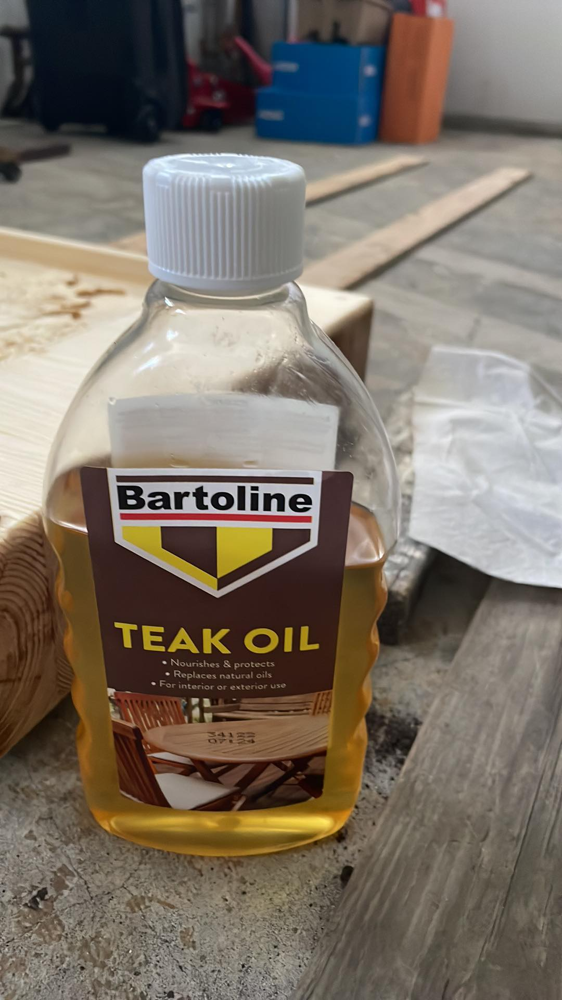
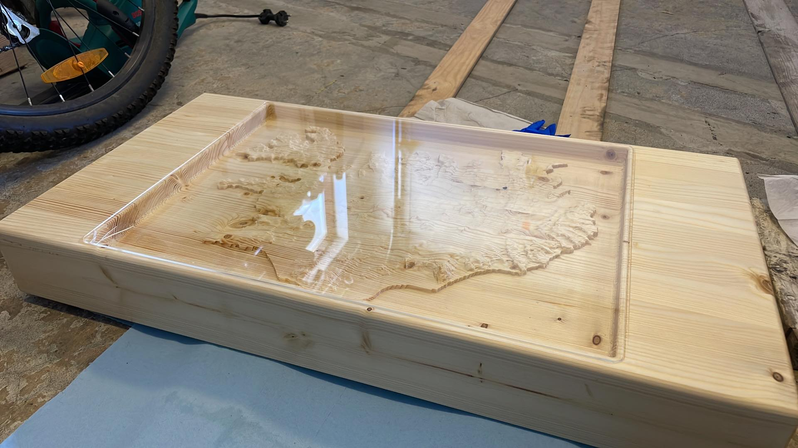

Lokaverkefni
Lýsing
Í lokaverkefninu var ég í hópi með Aroni, Birki og Þorbirni. Ávkeðið var að fræsa út Ísland á borðplötu sem hægt var að nota sem eins konar kaffiborð. Hægt er að sjá lokaútgáfuna hér að ofan og allt ferlið á plötunni á þessum link hér.
Minn hluti
Minn hluti fólst mest í því að taka þátt í framleiðslunni á borðplötunni. Mér tókst ekki að taka þátt í undirbúningnum á Íslandi í Fusion 360 þar sem ég var í 10 daga æfingaferð erlendis, strákarnir stóðu sig með prrýði og kláruðu mest alla vinnuna í Fusion á nokkrum dögum. En engu að síður þurfti ég að bæta upp fyrir það.
Ásamt strákunum vann ég í sameiginlegu vefsíðunni í gegnum Visual Studio sem Aron setti upp. Ásamt því stóðum við vaktir yfir fræsinum og pössuðum að allt var í lagi á með fræsun stóð yfir. Hins vegar á vaktinni minni lentum ég og Hafliði í því veseni að fræsirinn hafi byrjað að fræsa á vitlausum stað og þurftum við að reikna út offset svo hægt væri ræsa fræsinn á réttum stað og halda fræsun áfram. Að lokinni fræsingu þurfti að olíubera viðinn. Við notuðumst við Bartoline Teak Oil sem Þorbjörn hafði reddað, sjá mynd hér fyrir neðan.
Eftir að ég og Aron kláruðum að olíubera plötuna í síðasta sinn þá tókum við þá ákvörðun, með samþykki Birkis og Þorbjörns, að það væri líklega flottara að sleppa því að nota Epoxy. Í staðinn gerðu ég og Aron plexi gler í laserskeranum. Plexi glerið var 480mm x 360mm með 7,5mm fillet á hornunum. Sjá útkomu hér að neðan.
